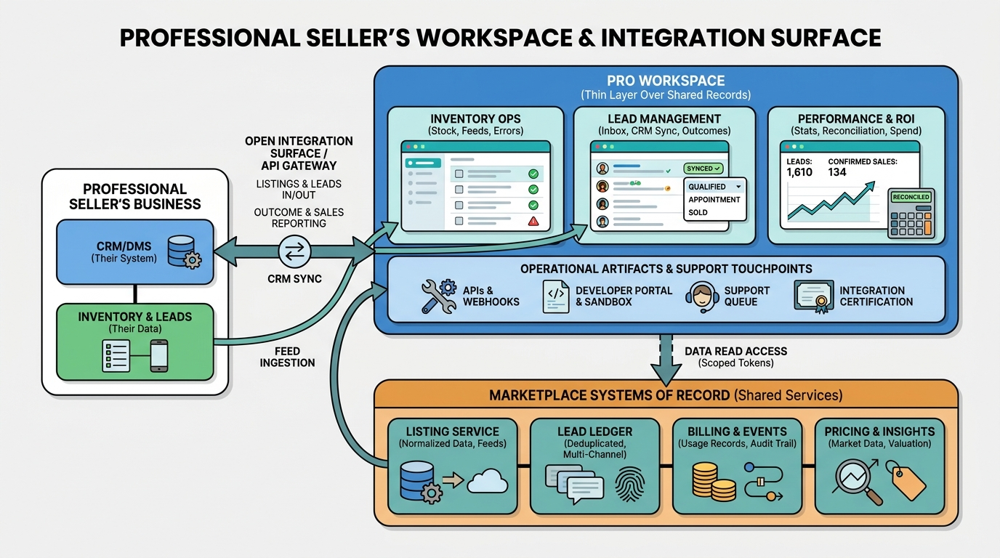

Part III — SUPPLY: Getting Inventory In
Serving the Pros: Dealer, Agent and Merchant Tooling

Image generated by Google Gemini (gemini-3-pro-image-preview)
Part III — SUPPLY: Getting Inventory In

Image generated by Google Gemini (gemini-3-pro-image-preview)